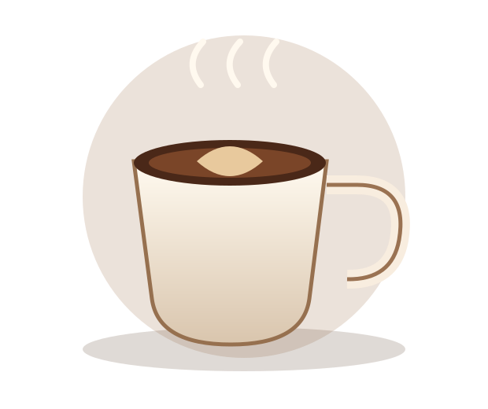
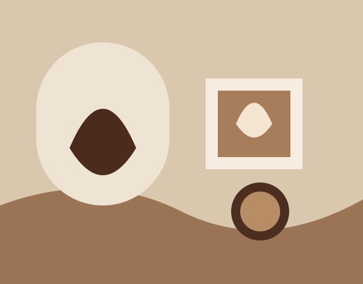
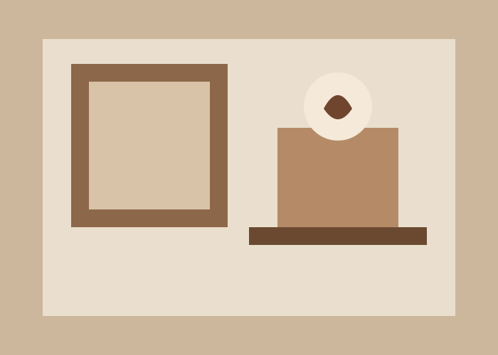
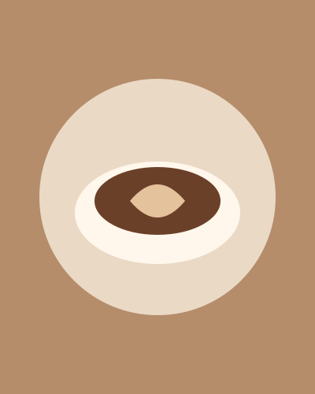
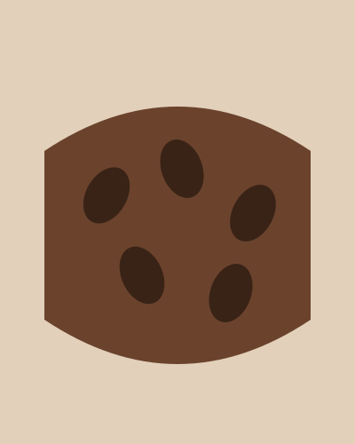

SIGNATURE
Caffè Latte
Espresso dengan susu lembut dan creamy.
Rp 25.000Temukan kenikmatan kopi pilihan yang diracik dengan sepenuh hati. Teman sempurna untuk memulai hari, berbagi cerita, dan menikmati jeda.

Kualitas dalam setiap racikan
Disajikan selalu segar
Diracik dengan perhatian
Tempat untuk kembali

Kopi Andalan lahir dari kecintaan pada kopi dan momen sederhana. Kami ingin setiap cangkir menghadirkan rasa yang akrab, suasana yang hangat, dan pengalaman yang membuatmu ingin datang kembali.
Kami percaya, hal istimewa tidak harus rumit. Cukup kopi yang nikmat, teman yang tepat, dan waktu untuk menikmati hari.
Lebih dekat dengan kami ↗MAKE YOUR MOMENT COUNT
Setiap detail dibuat untuk menghadirkan pengalaman ngopi yang menyenangkan.



“Kopinya enak dan tempatnya nyaman. Pas untuk kerja sebentar atau ngobrol santai bareng teman.”
— Pecinta KopiMampir ke Kopi Andalan dan temukan sajian favoritmu.